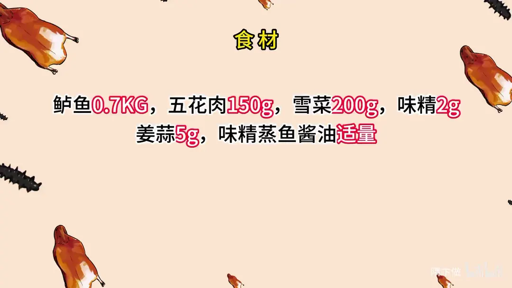
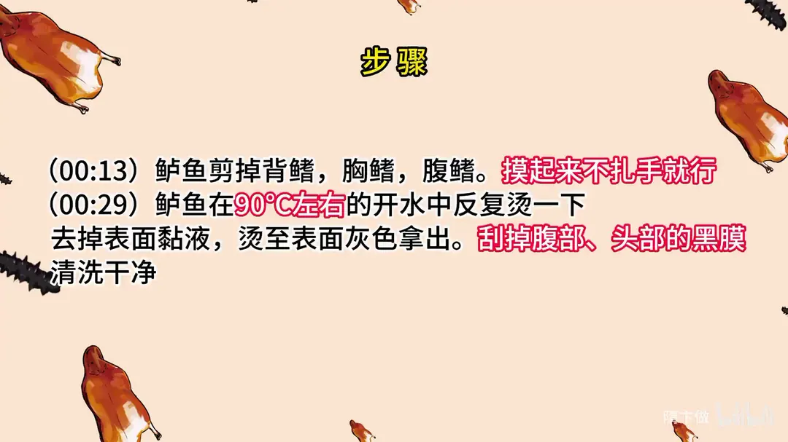
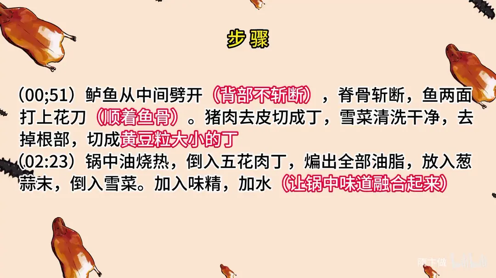
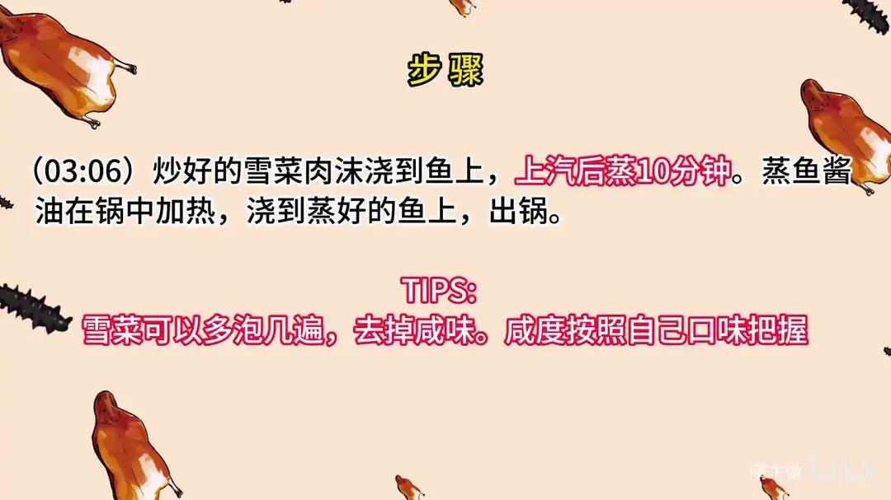

雪菜蒸鱼
隋卞一做。鲈鱼剪鳍、烫去表面黏液后从中间劈开打花刀，五花肉丁与雪菜炒香后铺在鱼身上，上汽蒸 10 分钟，最后淋上加热的蒸鱼酱油。
原视频：https://www.bilibili.com/video/BV1rN411B7uR
食材
鲈鱼、五花肉、雪菜 等 6 样
| 类别 | 用料 | 用量 |
|---|---|---|
| 主料 | 鲈鱼 | 0.7KG |
| 主料 | 五花肉 | 150g |
| 主料 | 雪菜 | 200g |
| 调料 | 味精 | 2g |
| 调料 | 姜蒜 | 5g |
| 调料 | 蒸鱼酱油 | 适量 |
步骤
- 剪鳍：鲈鱼剪掉背鳍、胸鳍、腹鳍，摸起来不扎手就行。
- 烫皮：鲈鱼在 90℃左右的开水中反复烫一下，去掉表面黏液，烫至表面灰色拿出；再刮掉腹部、头部的黑膜，清洗干净。
- 改刀切配：鲈鱼从中间劈开，背部不断断，脊骨斩断，顺着鱼骨在鱼两面打上花刀。猪肉去皮切成丁；雪菜清洗干净，去掉根部，切成黄豆粒大小的丁。
- 炒雪菜肉沫：锅中油烧热，倒入五花肉丁，煸出全部油脂，放入葱蒜末，倒入雪菜；加入味精，加水，让锅中味道融合起来。
- 蒸制浇汁：炒好的雪菜肉沫浇到鱼上，上汽后蒸 10 分钟；蒸鱼酱油在锅中加热，浇到蒸好的鱼上，出锅。
小贴士
- 雪菜可以多泡几遍，去掉咸味；咸度按照自己口味把握。
讲解要点
难度：★★☆☆☆（几乎无火候门槛，难点是雪菜去咸、鱼去黏液）
为什么这么做
- 剪掉背鳍、胸鳍、腹鳍：这几个鳍下几乎没肉，腥味却重，还容易扎嘴，剪掉更利落。
- 鲈鱼用 90℃ 左右的水烫皮：清蒸不适合像红烧那样高油温炸，用过热水两面一烫，就能把表面那层黏液烫掉；表皮变浅灰色后拿刀一刮，刮出黑色的膜，腥味基本就没了。
- 从中间劈开、脊骨斩断：鱼摊开趴着蒸，受热均匀、熟得快，摆盘也好看。
- 必须用五花肉：雪菜要靠猪油才香，选肥一点的五花，把油脂全部煸出来，是这道菜的香味来源。
- 雪菜切黄豆粒大小、去掉根部：根部容易夹泥沙，切得太碎一炒就没了口感。
- 炒雪菜时加水：让肉末、雪菜的味道在锅里融合起来，再铺到鱼上，鱼只负责把鲜味蒸进去。
- 蒸鱼酱油要加热再浇：热酱油香气一下就出来，浇上去不腥，也不会把鱼的温度拉低。
容易翻车
- 雪菜本身咸，切之前要多泡几遍去掉咸味，否则整道菜就咸得没法吃。
- 五花肉的油没煸透就下雪菜，会腻，油没出来雪菜也不香。
- 蒸够 10 分钟、鱼眼鼓出来就可以，多蒸一会儿味道更重、不容易出错，但鱼太老口感就差点。
- 雪菜要盖满鱼身，没盖住的地方容易被蒸汽冲得发干。
原片尾卡




原片文案
AI 字幕校准稿
马上快中秋了，餐桌上的鱼肯定少不了。教给你们一个淮扬名菜，淮安扬州人都不一定都吃过的，而且极其简单。
今天我们选的是鲈鱼，背鳍都给它剪了，这个地方没有肉，而且腥，还有腹鳍、胸鳍。咱们做红烧的时候都是高油温炸，叫红烧皮炸吧，炸的时候会把表面的黏液给它炸掉；那么我们蒸鱼呢，可以采用开水烫的方法，90 来度就行了。把鱼放在里边两面烫一下，看着表皮的色变成浅灰色了就行了。然后拿刀给它刮一下，表面刮掉的都是黑色的黏膜，一点腥味都没有了，清洗一下。
腹部给它劈开，把脊骨给它斩断，头骨也斩断了，洁白洁白的。顺着骨头打上点花刀，顺着骨头切就行了。这样趴着还显大。
这个炒雪菜肯定要放猪肉，要放大油，它才香。皮就不要了，肉可以选肥一点，主要是要用里面那个猪油。切成丁，雪菜前面那个根就不要用了，这里边很容易存在一些泥沙，大小就是黄豆粒大小吧。顺着切，切到叶的时候得劈一下。前面的工作就做完了，真的没骗你，很简单。
先把切好的肉丁搁里边，一定要把肉里面的油脂全煸出来，把葱姜倒里边，这会儿就出香味了，把雪菜倒进去。加水是为了促进味道的融合，然后放味精。好了，我们把它浇到鱼上面就可以了，让雪菜把鱼身严密地都盖住。
把水烧开，把鱼放进去，大火上汽蒸 10 分钟。蒸鱼酱油得热一下，浇在上面就行了，根据您个人口味，吃的咸的多加点。出锅了，雪菜蒸鱼做好，来吧。
雪菜赋予了鱼肉咸香的味道，它又有雪菜的香，雪菜的香跟鱼肉本身的香，还有猪油的那个香，是很融合的，而且真的好简单。它不用像清蒸鱼一样那么严格地要求火候和新鲜程度，鱼不用那么新鲜大家也能做，换句话说就是提高了在家做的容错，这种做法怎么做都好吃，不会做得很失败。如果这个鱼再多蒸一会儿，味道甚至会更重，基本上不会出错。吃辣椒的还可以放点辣椒。